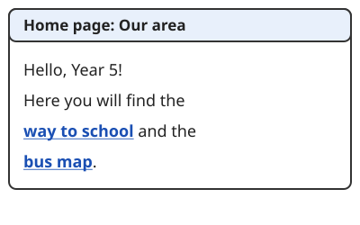

A graph made of pages
Learn with an AI tutor
An AI tutor explains this page to you and helps you with the exercises. Choose your assistant:
Open with Claude Open with ChatGPT Open with Mistral Vibe
You use your own account with the provider. The assistant is not offered by lernapps.net: lernapps only provides the content and the exercises. The choice holds for all pages, on this device only.
How many clicks to the pool?
Class 7b chat
Ms Berg: Our project: a town guide for the new Year 5 pupils, with five pages that link to each other.
Selin: I'll do the pages about the bus and the pool!
Mia: I've already drawn who links to whom.
Exercise
Solution
Right answer: 2
Home page → Bus → Pool: two arrows, so two clicks. Each click follows a link.
Pages and links
On the page before, you drew links as arrows. On this page you will learn how a whole hypertext is built.
- hypertext
A hypertext is made of pages that are joined by links. As a graph, the pages are nodes and the links are arrows.
- home page
The home page is the page where you start reading a hypertext. From it you can reach the other pages through links.

© CC-BY-4.0This is what the home page looks like in the browser. The blue, underlined words are the link texts.
- link text
The link text is the word you click on. It tells you where the link leads.
You read a book from front to back. In a hypertext, you choose for yourself which link to follow.
Practice
Exercise
Solution
Right answer: page – a node; link – an arrow; home page – the node where you start; link text – the word you click on
Pages are the nodes, links are the arrows. The home page is the node where you start, and the link text is on the page.
Exercise
Solution
Right answer: 1. home page, 2. School, 3. Library
Only one arrow leads to the library, from School. Tom gets to School from the home page.
Exercise
Solution
Right answer: The statement is false.
The link is on the Bus page. From the pool, the only link leads to the home page, and from there to the bus.
Exercise
Solution
Jump to another page with one click. right answer
A link takes you straight to its target page. In a book you have to turn the pages yourself.
Read pages with text and pictures.
A book also has pages with text and pictures. That is no difference.
Start at the first page.
A book also starts at the front. The town guide has the home page for that.
In a hypertext you jump from page to page using links and choose the path yourself.
Now it's your turn: on the next page, class 7b builds its own town guide.
Found a mistake or have an idea for this app?